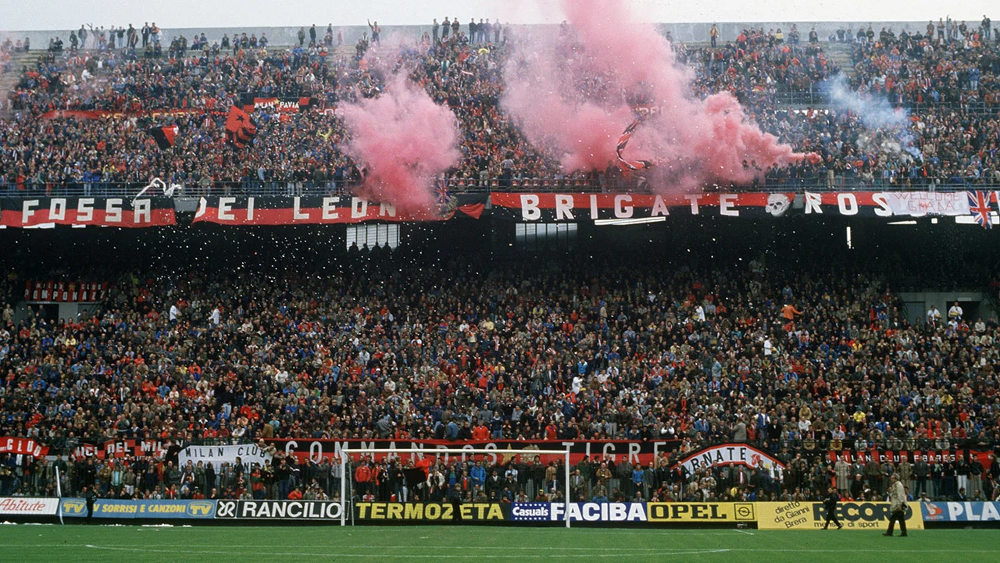
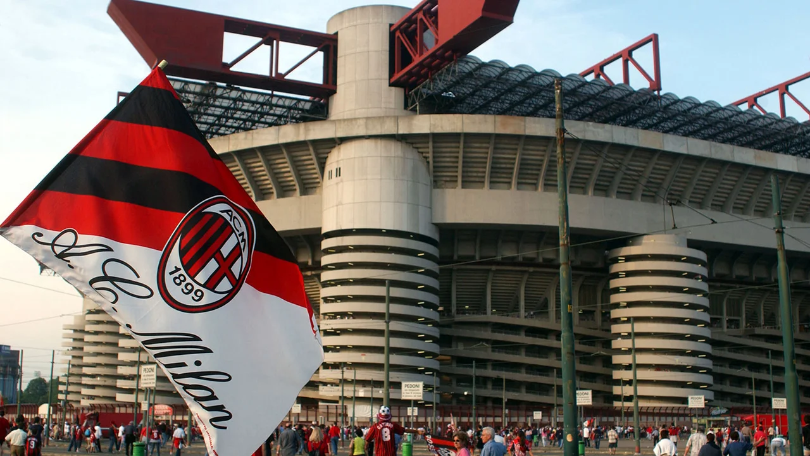
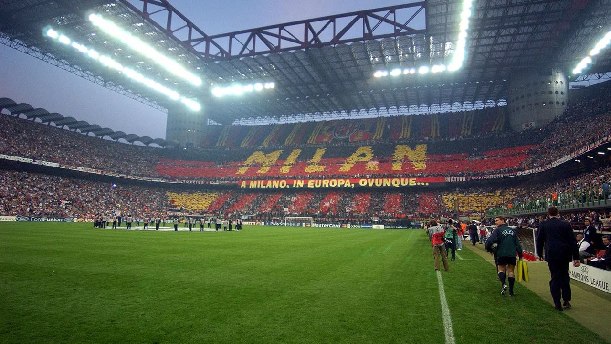

SAN SIRO

It’s not just AC Milan’s founder who was English, but the stadium too. In 1925 the President of AC Milan, Piero Pirelli, gave the go-ahead for the construction of a new stadium dedicated entirely to football. Pirelli was a huge fan of English football and thus it was no surprise that he wanted a stadium built in the style of the English, designed purely for football and without an athletics track. The stadium was built in a record time of 13 months, between August 1925 and September 1926.
The ground was christened by the visit of Sampierdarenese. On 4 July 1926 AC Milan played their last league game at Viale Lombardia in Milan, winning 2-0 against the Genoese team, and the first official match at San Siro was against the same opposition on 3 October 1926, this time losing 2-1.
The stadium’s initial structure, designed by engineer Alberto Cugini and architect Ulisse Stacchini, was very typically English. It was composed of four separate stands, square to the pitch and made out of reinforced concrete, one of which was partially covered by a roof, along with standing section level to the pitch, taking the stadium’s capacity up to 35,000. Back then, the curved edges linking the stands had not yet been built, and the stadium still served the needs of the racetracks. Some of the spaces under the stands were used as dressing rooms, showers and offices, whilst others doubled up as makeshift stables, barns and storage rooms for fodder.

The stadium hosted the 1934 World Cup semi-final which saw Italy beat Austria 1-0 on 3 June 1934, and shortly after this San Siro was purchased by the City of Milan, who started the stadium’s first expansion project in 1935. The project involved the construction of four connecting curves between the stands along with an increase in capacity for the two central stands. Upon conclusion of the work, the Milanese people were handed back a stadium that could now host 55,000 fans.
The 60s, 70s and 80s brought a period of great success for both Milan teams, as they won European and worldwide trophies, the commemorative plaques for which now line the walls of the San Siro stairways. With Italy selected as the host nation for the 1990 World Cup, the stadium underwent huge renovations, with the project led by architects Giancarlo Ragazzi, Enrico Hoffer and engineer Leo Finzi. A third tier was built, independently supported by 11 cylindrical towers arranged around the stadium which gave access to the stands. Four of these towers also hold up the large supporting beams for the new stadium roof. The colours of the seats mark the four sectors into which San Siro is divided. Red and orange for down the sides, green and blue behind the goals.

Each of the 85,700 seats was then covered with a polycarbonate sheet, which both ensured greater comfort for spectators and natural lighting for the grass pitch when the stadium was empty. New lighting and an undersoil grass heating system were installed to maintain a constant temperature for the pitch, preventing the formation of ice.
On 8 June 1990, the stadium hosted the opening match of the World Cup and Cameroon beat Argentina 1-0. Since then, every Sunday the Scala of Milanese football has hosted and continues to host the passion of thousands of fans. In the summer of 2008, following the redevelopment works to adapt the structure to the standards required by UEFA, the capacity of the stadium was reduced to 80,018. Renovation works were carried out in the summer of 2012 and more have taken place since. The management of the San Siro stadium and related activities, including those related to branding and merchandising, is carried out by the company M-I Stadio Srl, founded on 12 December 2011 from the original company Consorzio San Siro Duemila.
Also the venue for major events, concerts and shows, the hallowed San Siro pitch has hosted the greatest champions to ever grace this sport, both wearing the AC Milan shirt and those of teams competing against the Rossoneri.
